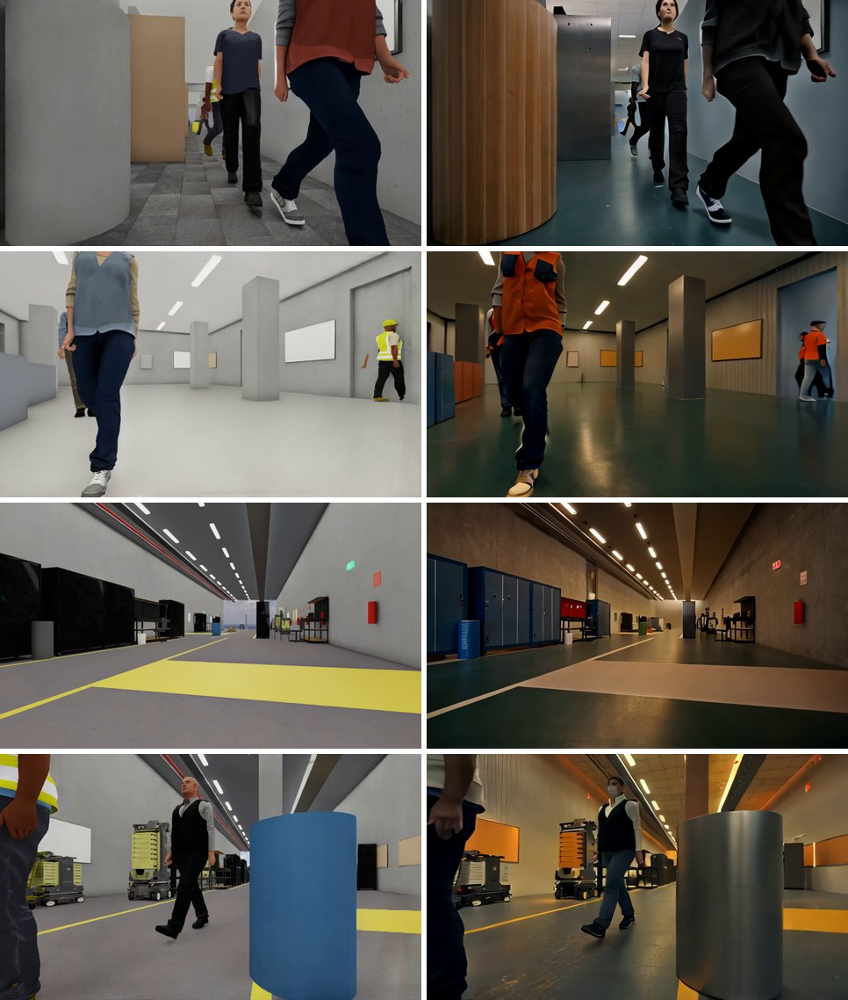
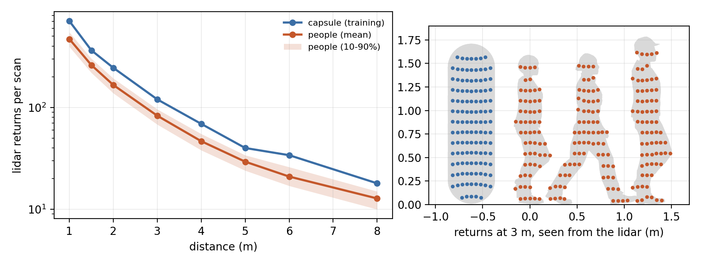

Unitree B2-W: Learned Navigation among People for a Wheeled Quadruped
Abstract
We train a navigation policy for Unitree's B2-W wheeled quadruped that drives the robot through its built-in sport-mode controller, for deployment in an indoor lab. The robot is simulated as a kinematic body that follows velocity commands through a model of the controller whose latency, response, gain, deadband and drift are drawn per episode. Training uses the New York street tiles and pedestrians of G1 Patrol, six procedural indoor tile types and sections of the deployment lab modeled on photographs. The policy follows a planned route: it observes the points of the route 1 m and 2.5 m ahead, odometry, gravity, its previous command, the speed cap and a height map built from a RoboSense RS-Helios-5515 lidar and two Intel RealSense D435i depth cameras; a privileged teacher is trained with PPO and distilled into this onboard student. On the robot, a safety shield that is independent of the policy scales each command down until the robot could stop before anything its sensors see comes within a margin, and makes it crawl near anything that moves. On a mixture in which half the tiles are sections of the lab, the student reaches 72.5% of its goals (81.0% in the lab hall); with the shield, 57.3% (72.6%), with structure contacts in 1.9% of the episodes and contacts in which the robot moved towards a pedestrian in 0.6%. With its sensors seeing posed human characters instead of the capsules of training, the student moves into pedestrians in 9.6% of the episodes without the shield (6.9% with capsules); fine-tuned with such characters, in 6.5%, and with the shield below 0.5% in either case. The software that runs on the robot (SLAM, a route planner, the policy and the shield, started by one ROS 2 launch file) has been run against a simulated B2-W over ROS 2; it has not yet run on the robot.
Method
Robot model. The B2-W is driven through Unitree's sport-mode controller, which takes body velocity commands (forward −0.8 to 1.5 m/s, lateral ±0.3 m/s, yaw rate ±1.2 rad/s) and moves the legs and wheels. It is simulated as a kinematic body with a 1.12 × 0.58 m footprint that follows the commands through a model of the controller drawn per episode: latency of 40–160 ms, a first-order response, acceleration bounds, gain errors, a deadband, yaw drift and velocity noise. The same model can be fitted to logs of the robot (scripts/b2w/sysid.py) and evaluated in simulation. Each episode caps the planar speed at a value between 0.4 and 1.5 m/s that the policy observes; on the robot it is the operator's speed setting. The body stands 0.55–0.72 m above the ground, drawn per episode, and the height maps take their heights from the floor as the robot measures it in each scan, so that nothing has to be measured on the robot.
Tiles and routes. Besides the six New York street scenario types of G1 Patrol, the robot trains on six procedural indoor tile types (labs, corridors, doorways between rooms, offices, warehouses with a loading dock, lobbies with a stairwell) and on sections of the lab hall it is deployed in, modeled on photographs: the painted main aisle, drawer-cabinet benches, test machines, open racks, bins, carts, pallets and a workstation area with office chairs and camera tripods. A second lab serves for evaluation: a civil engineering laboratory furnished with 64 NVIDIA SimReady props (CC BY 4.0), with a test row of load frames, environmental chambers, actuator columns and workbenches along the aisle, a strong floor with beams on supports, loaded pallets, carts, hand trucks, scaffolds, ladders and tripods, and shelving along the walls; a prop is kept out of as its bounding box, while the lidar and the depth cameras see its mesh (decimated to at most 3,000 triangles). Every route is planned on the tile's clearance map for the robot's width, keeping up to 0.6 m from structures where this costs little detour; in 30% of the episodes the plan ignores small structures (chairs, carts, bins), which the robot then avoids by itself, as with a map that is out of date. The policy observes the points of the route 1.0 m and 2.5 m ahead of its position on the route and is rewarded for progress along it. With the goal as its only target, the teacher reached 59% of the goals and failed where routes detour through doors; with route waypoints it reached 63%, with gains on every indoor tile type.
Policies. A privileged teacher (pedestrian states, distances to structures in 72 directions, a terrain scan) is trained with PPO for 3,000 iterations on the street and indoor tiles and fine-tuned for 1,000 iterations on a mixture in which half the tiles are sections of the lab hall. Two students are distilled from it with DAgger for 1,500 iterations: the released student observes a height map built from the lidar and the front and rear depth cameras, a fallback student the lidar alone. Rewards slow the robot near structures (the fastest point of the footprint, which turning swings, at most 0.3 m/s within 0.1 m of a structure and 1.5 m/s from 1 m), keep it within 0.2 m of its route and penalize contacts.
| Input | Size | Source on the robot | Noise in training |
|---|---|---|---|
| Route waypoints | 4 | the planned route 1 m and 2.5 m ahead, heading frame | ±0.05 m; bias ±0.1 m per episode |
| Velocity | 3 | odometry of the sport-mode state | ±0.05; bias ±0.03 per episode |
| Projected gravity | 3 | IMU | ±0.03 |
| Previous command | 3 | the policy's last output | – |
| Speed cap | 1 | the operator's max_speed | – |
| Height map | 3 × 80 × 80 | RS-Helios-5515 lidar and two D435i depth cameras: accumulated over 8 s, current scan, previous scan | odometry drift, dropout, a camera failing in 5% of the episodes, floor height error ±3 cm |
Environments
Safety shield
On the robot every command passes a shield that is independent of the policy (g1_patrol.shield). A command is admissible if the robot, executing it for 0.35 s (sensing, policy and controller latency) and then braking at 0.8 m/s², with 12% more speed than commanded and 8 cm of drift per meter, can stop before any sensor return comes within a margin of its footprint: 0.10 m to obstacles, 0.25 m to drops, and to tall things (people, but also machines and walls) from 0.10 m below 0.25 m/s to 0.45 m above 0.75 m/s, so that doors are passed slowly and people with room. Commands are scaled down by bisection until they are admissible. Returns where the current scan sees something tall and the previous one saw floor are assumed to be people walking at the robot at 1.4 m/s while it closes in on them, and the closing speed towards tall things is held to 0.25 m/s within 0.8 m. Moving away is never limited. A guard around the shield replaces a command that is nearly blocked by a safe one near it (the translation or the turn alone, a nudge sideways, a step back) when the robot is at rest, and backs the robot off after 1.5 s of being blocked.
The shield alone lowers structure contacts from 10.3% to 3.2% of the episodes and contacts in which the robot moves into a pedestrian from 6.9% to 0.7%; the guard raises the goal rate from 73.5% to 76.0% and lowers structure contacts to 2.2% (Table 2). The alternatives must be checked against the same returns as the command, those closest to the footprint: checked against the returns closest to the robot's center, a wall alongside crowded out what lay ahead, and structure contacts rose to 9%. Crawling lowers contacts in which the robot moves into a pedestrian to 0.6% and costs 19 points of goal rate: the returns that appear where the previous scan saw floor come also from static things coming into view as the robot moves. The robot crawls by default and drives without crawling where nobody walks (crawl:=false). Most remaining pedestrian contacts are pedestrians walking into a robot that stands or crawls (22.6% of the episodes); a quarter of the simulated pedestrians are distracted and give way only at the last moment.
| Fused student | Episodes | Goal (%) | Goal, lab hall (%) | Structure contact (%) | Pedestrian contact, robot moving (%) | Pedestrian walked into stopped robot (%) | Time-out (%) | Speed (m/s) | Shield stops (% of steps) |
|---|---|---|---|---|---|---|---|---|---|
| No shield | 18,831 | 72.5 | 81.0 | 10.3 | 6.9 | 8.2 | 1.8 | 0.52 | – |
| Shield alone: commands scaled down | 13,017 | 73.5 | 84.3 | 3.2 | 0.7 | 14.8 | 7.7 | 0.37 | 11.0 |
| + alternatives from rest, backing off (crawl:=false) | 13,056 | 76.0 | 86.7 | 2.2 | 0.8 | 14.3 | 6.7 | 0.38 | 14.1 |
| + crawling near what moved (released default) | 9,339 | 57.3 | 72.6 | 1.9 | 0.6 | 22.6 | 17.6 | 0.24 | 12.4 |
On the robot
One ROS 2 launch file starts everything on the robot's Jetson Orin NX: the lidar driver and the depth cameras, odometry from the sport-mode state, SLAM (slam_toolbox) on a slice of the scan, a route planner on the map being built (unknown space counts as free, so the robot can be sent into unmapped rooms), the policy (ONNX) with its height map and the shield, and the output to the sport-mode controller as Move(vx, vy, wz). The policy drives only while a dead-man button on the remote is held; moving a stick takes over, and missing scans, odometry or remote messages stop the robot. An install script sets up ROS 2 Foxy or Humble, Unitree's messages and the lidar driver; the deployment guide goes from the network to a shadow run (the policy drives nothing while the robot is steered by hand and the map is built) to the first drive.
| Stage | Rate | Input | Output |
|---|---|---|---|
| SLAM (slam_toolbox) | per scan | lidar slice 0.15–1.0 m above the floor, odometry | map, map → odom |
| Route planner | per goal, then 1 Hz | map, robot pose, goal | route (nav_msgs/Path) |
| Height map | 10 Hz | lidar scan, latest depth frames, odometry, floor measured in the scan | 3 × 80 × 80 map |
| Policy | 10 Hz | route waypoints, velocity, gravity, previous command, speed cap, height map | (vx, vy, wz), capped at the speed setting |
| Shield and guard | 10 Hz | returns, map cells, measured velocity | the admissible command |
| Sport-mode controller | Unitree | Move(vx, vy, wz) while the dead-man button is held | legs and wheels |
Before the robot, the whole stack was run against a simulated B2-W on ROS 2 (deploy/b2w/sim) that speaks like the robot, ray-casts the lidar's point cloud in a section of the lab hall with walking people and moves with the controller model of the training (Table 4).
| Scenario | Result | Time | Contacts (robot moving) |
|---|---|---|---|
| 12 m along the aisle, around a pallet, chairs and a tripod | reached | 42.5 s | 0 (0) |
| through a 1.0 m door into unmapped space | reached | 52.5 s | 0 (0) |
| starting facing away from the goal | reached | 35.5 s | 0 (0) |
| a person walking the aisle at the robot (ignoring it) | reached | 44.0 s | 0 (0) |
| two people crossing back and forth (ignoring it) | reached | 97.5 s | 5 (0) |
| dead-man button not held | did not move | – | 0 (0) |
Results
All evaluations are on the lab mixture (half the tiles sections of the lab hall, half street and indoor tiles), with robots spread over all ten difficulty levels and up to 20 pedestrians, a quarter of whom are distracted and give way only at the last moment; 1,024 robots for 300 s. With the shield, the speed cap is applied before the shield, as on the robot.
| Policy | Episodes | Goal (%) | Goal, lab hall (%) | Structure contact (%) | Pedestrian contact, robot moving (%) | Pedestrian walked into stopped robot (%) | Time-out (%) | Speed (m/s) | Shield stops (% of steps) |
|---|---|---|---|---|---|---|---|---|---|
| Lab teacher (privileged) | 18,239 | 69.4 | 79.4 | 16.6 | 8.5 | 3.2 | 1.8 | 0.53 | – |
| Fused student (lidar + 2 depth cameras) | 18,831 | 72.5 | 81.0 | 10.3 | 6.9 | 8.2 | 1.8 | 0.52 | – |
| Lidar-only student | 18,591 | 73.1 | 82.4 | 10.5 | 7.0 | 7.4 | 1.8 | 0.52 | – |
| Fused, shield | 9,339 | 57.3 | 72.6 | 1.9 | 0.6 | 22.6 | 17.6 | 0.24 | 12.4 |
| Fused, shield, cap 0.5 m/s | 8,610 | 53.9 | 69.8 | 1.8 | 0.7 | 23.9 | 19.7 | 0.21 | 11.3 |
| Fused, shield, cap 1.0 m/s | 9,609 | 58.7 | 73.6 | 1.8 | 0.4 | 22.2 | 16.8 | 0.24 | 12.9 |
The fused student reaches 72.5% of its goals and the lidar-only student 73.1%, against 69.4% for the privileged teacher, which touches structures and pedestrians more often. A built-in controller with more latency, a slower response, weaker tracking or more drift, failed depth cameras and a degraded lidar map each change the goal rate by at most 1.3 points (Table 6). With the shield at the speed caps of the first trials (0.5 and 1.0 m/s) the goal rate is 53.9% and 58.7%, and with a laggy controller 57.1%.
| Fused student | Episodes | Goal (%) | Goal, lab hall (%) | Structure contact (%) | Pedestrian contact, robot moving (%) | Pedestrian walked into stopped robot (%) | Time-out (%) | Speed (m/s) | Shield stops (% of steps) |
|---|---|---|---|---|---|---|---|---|---|
| Nominal controller | 18,831 | 72.5 | 81.0 | 10.3 | 6.9 | 8.2 | 1.8 | 0.52 | – |
| Laggy controller (0.16-0.25 s latency) | 18,569 | 72.8 | 81.5 | 9.8 | 7.3 | 7.9 | 1.9 | 0.53 | – |
| Sluggish controller (2x response time, 1/2 acceleration) | 18,701 | 71.5 | 81.0 | 10.1 | 8.3 | 8.1 | 1.7 | 0.51 | – |
| Weak controller (70-80 % of the command) | 15,579 | 71.3 | 81.7 | 9.1 | 6.2 | 10.4 | 2.7 | 0.42 | – |
| Drifting controller (2x yaw drift) | 18,686 | 72.9 | 81.5 | 10.1 | 6.9 | 8.1 | 1.8 | 0.52 | – |
| Depth cameras failed | 19,208 | 71.3 | 80.6 | 10.6 | 7.5 | 8.9 | 1.6 | 0.53 | – |
| Degraded lidar map (20 % dropout, odometry drift) | 18,758 | 72.8 | 81.8 | 9.7 | 7.4 | 8.0 | 1.8 | 0.52 | – |
| Laggy controller, shield | 9,302 | 57.1 | 72.4 | 1.7 | 0.8 | 22.7 | 17.7 | 0.23 | 13.1 |
Civil engineering lab
On a mixture in which the civil engineering lab takes half of the lab tiles, the released policy reaches 71.9% of its goals there without the shield and 57.0% with it, against 80.7% and 71.4% in the lab hall (Table 7). The lab leaves passages of at least 0.9 m between the things on its strong floor, so that no route passes within 0.5 m of a structure, but it is denser: the privileged teacher, which observes the distances to structures, touched structures in 15% of the easiest civil-lab episodes (10% in the lab hall). Fine-tuning the lab teacher and distilling the students on that mixture did not improve on it: 72.2% of the goals in the civil engineering lab against 71.9% without the shield and 58.7% against 57.0% with it, while the goals in the lab hall fell to 66.9% with the shield (from 71.4%) and contacts in which the robot moved towards a pedestrian rose to 10.2% of the episodes without it (from 8.8%). The released policy is the one trained without the civil engineering lab.
| Policy | Episodes | Goal (%) | Goal, lab hall (%) | Goal, civil eng. lab (%) | Structure contact, civil eng. lab (%) | Pedestrian contact, robot moving (%) | Time-out (%) |
|---|---|---|---|---|---|---|---|
| Released fused student | 18,864 | 68.3 | 80.7 | 71.9 | 13.7 | 8.8 | 1.9 |
| Released fused student, shield | 8,966 | 51.4 | 71.4 | 57.0 | 5.7 | 0.6 | 19.3 |
| Lab teacher trained with the civil lab (privileged) | 19,007 | 64.4 | 76.6 | 69.2 | 20.3 | 11.3 | 1.4 |
| Fused student trained with the civil lab | 19,287 | 67.6 | 79.8 | 72.2 | 14.1 | 10.2 | 1.6 |
| Fused student trained with the civil lab, shield | 8,940 | 50.2 | 66.9 | 58.7 | 5.7 | 0.7 | 20.2 |
Camera student
A third student also sees the image of the B2-W's front color camera: the class token and 2 × 3 average-pooled patch tokens of a frozen DINOv2-small (2,688 features) of a 336 × 196 image, besides the fused student's inputs. During training the camera sees the environment drawn as in the demo: textured tiles, indoor rooms under ceilings with light fixtures, furniture drawn as NVIDIA SimReady props with tools, monitors and boxes on the work surfaces and boards and signs on the walls, and every pedestrian as an animated character that only its own robot's camera sees; the geometry the robot and its sensors interact with is unchanged. Started from the released fused student with the camera's weights at zero and distilled for 300 iterations with 256 robots, it reaches 70.5% of its goals in simulation (57.1% with the shield), against 73.5% (60.3%) for the fused student (Table 8): the camera does not improve the policy in simulation.
Its encoder is aligned to realistic images after training rather than trained on them. The 61 indoor replays of the camera environment (of 126) are transferred to realistic video by NVIDIA Cosmos 3 Nano, the render's edges and depth keeping the layout and a text prompt per replay drawing wall paint, floor, ceiling, light, equipment colors and clothing at random (Figure 3). The last 8 of the encoder's 12 blocks are fine-tuned so that a transferred frame gives the patch tokens the original encoder gives its render; the policy is unchanged. On held-out replays, realistic images change the policy's actions by 0.110 with the original encoder and by 0.058 with the aligned one, against 0.141 without the camera's information; the cosine similarity of the camera features to the renders' rises from 0.77 to 0.93. The camera student is not part of the robot stack yet.

| Policy | Episodes | Goal (%) | Goal, lab hall (%) | Structure contact (%) | Pedestrian contact, robot moving (%) | Pedestrian walked into stopped robot (%) | Time-out (%) | Speed (m/s) | Shield stops (% of steps) |
|---|---|---|---|---|---|---|---|---|---|
| Fused student (released) | 2,322 | 73.5 | 82.0 | 9.6 | 6.6 | 8.6 | 1.7 | 0.53 | – |
| Camera student (+ front color camera) | 2,183 | 70.5 | 81.6 | 12.1 | 7.0 | 7.7 | 2.2 | 0.48 | – |
| Fused student, shield | 1,108 | 60.3 | 75.6 | 3.0 | 0.5 | 22.1 | 14.2 | 0.24 | 11.8 |
| Camera student, shield | 1,112 | 57.1 | 74.1 | 2.2 | 1.2 | 24.4 | 15.1 | 0.23 | 12.6 |
Pedestrians as people
In training, the lidar and the depth cameras see every pedestrian as a capsule 0.5 m wide and 1.7 m tall. To measure what this costs, they can see Isaac Sim characters in walking poses instead: the 10 characters of the demo, each skinned at 8 phases of its gait cycle and decimated to 4,000 triangles, facing the way the pedestrian walks; contacts remain those of the capsule. A person gives the lidar about two thirds of a capsule's returns at every distance (Figure 4). Seeing people, the released fused student moves into pedestrians in 9.6% of the episodes instead of 6.9% and the lidar-only student in 9.9% instead of 7.0%, at goal rates 0.8 and 2.2 points lower (Table 9); the shield, which acts on the sensor returns themselves, keeps these contacts at 0.4% (0.6% with capsules).
Fine-tuning the students for 500 iterations with their sensors seeing people (DAgger with the same teacher, from the released students) closes the gap: with people, the fused student moves into pedestrians in 6.5% of the episodes and reaches 73.4% of its goals, and 6.3% and 73.7% with 20 poses not used in the fine-tuning, while with capsules it does as before (7.0%, 72.5%). The lidar-only student improves alike with people (7.7%, 72.7%), at a small cost with capsules (7.4%, 72.3%). Structure contacts rise with fewer pedestrian contacts (10.1% against 9.3% for the fused student with people), since an episode ends at its first contact. With the shield, the fine-tuned and the released fused students do equally well (0.3% and 0.4% with people). Evaluations with people are not bitwise reproducible, unlike those with capsules: two runs of the released fused student gave 9.0% and 9.6%.

| Policy | Goal, capsules (%) | Goal, people (%) | Goal, other poses (%) | Pedestrian contact, capsules (%) | Pedestrian contact, people (%) | Pedestrian contact, other poses (%) | Structure contact, people (%) |
|---|---|---|---|---|---|---|---|
| Fused, released | 72.5 | 71.7 | 71.5 | 6.9 | 9.6 | 9.2 | 9.3 |
| Fused, fine-tuned | 72.5 | 73.4 | 73.7 | 7.0 | 6.5 | 6.3 | 10.1 |
| Lidar-only, released | 73.1 | 70.9 | 71.2 | 7.0 | 9.9 | 9.7 | 10.0 |
| Lidar-only, fine-tuned | 72.3 | 72.7 | 72.5 | 7.4 | 7.7 | 7.6 | 11.0 |
| Fused + shield, released | 57.3 | 56.2 | – | 0.6 | 0.4 | – | 1.8 |
| Fused + shield, fine-tuned | 57.0 | 55.7 | – | 0.4 | 0.3 | – | 1.7 |
Limitations
- All results are in simulation; the stack has been run against a simulated robot over ROS 2, not yet on the B2-W.
- The robot is simulated as a kinematic body following a model of its controller; the controller model is fitted to the training ranges, not yet to logs of this robot (
sysid.pyfits it once there are logs). - Pedestrians are kinematic and scripted, and their contacts end an episode; most remaining contacts with the shield are pedestrians walking into a robot that has stopped.
- In training the lidar and the depth cameras see pedestrians as capsules. Posed Isaac Sim characters stand in for people in Table 9; their limbs do not move, they are the 10 characters of the demo, and contacts are still those of the capsule.
- The shield sees what the lidar, the depth cameras and the map show; low objects beside the robot that none of them covers are remembered only by the map. Without a person detector, people are recognized only by moving.
- In the denser civil engineering lab the policy reaches 57% of its goals with the shield (71% in the lab hall), and training with that lab has not improved it.
- The camera student's alignment is measured on image-to-image transfers of simulated replays, not on images from the robot; the field of view of the B2-W's front color camera (90° horizontal) is assumed.
- The lab tiles are modeled on photographs; a scan of the hall can be turned into a digital twin (
scripts/b2w/occupancy_to_twin.py) and evaluated before driving there.